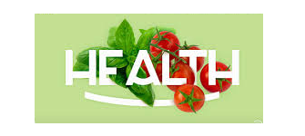

WELCOME ! WE CARE ABOUT YOUR HEALTH
IS WEALTH & HAPPINESS

Eating a healthy diet is not about strict limitations, staying unrealistically thin, or depriving yourself of the foods you love. Rather, it’s about feeling great, having more energy, improving your health, and boosting your mood.Proper foods are foods that aren’t just empty calories, foods that actually give you proteins, vitamins, minerals, and other nutrients. “proper food” means, food with a nutritional value that you can eat to get proteins, vitamins, and minerals. If the food you’re eating doesn’t give you any of those things, then it’s not proper food, and you probably shouldn’t be eating it.
ORDER NOW

Marco Pierre White is known as the world’s first celebrity chef and became the youngest and the first British chef to win three Michelin stars. He has trained chefs Gordon Ramsay and Mario Batali, and has appeared on culinary shows such as Hell's Kitchen and Marco Pierre White's Kitchen Wars.
FOR MOREBe it breakfast, brunch, lunch or dinner and even brinner delicious. brings you the best recipes direct from our studio, and from top international chefs.

Party's snack platter is incomplete without this delicious appetizer dish of seekh kabab. Succulent kebabs made with minced lamb, marinated in variety of spices, grilled on a tandoor/oven and served with green chutney. Full of juice and flavor, these kabab recipe is perfect as a starter for any dinner party.

This Chicken Corn Soup recipe is quick and easy to make on the stovetop or in the Instant Pot, it’s full of protein and veggies and it’s naturally gluten-free and deliciousthe soup freezes well for future meals—one reason why soups are my favorite thing to make. Beverly Hoffman, Sandy Lake, Pennsylvania.

Combine the seasoning salt, lemon and pepper seasoning and kosher salt together in a small bowl. Add lots of black pepper, to taste, and mix to create a rub for your steaks.Sprinkle some of the rub on one side of the steaks and rub it all over, then flip and rub the remaining seasoning all over the steaks.